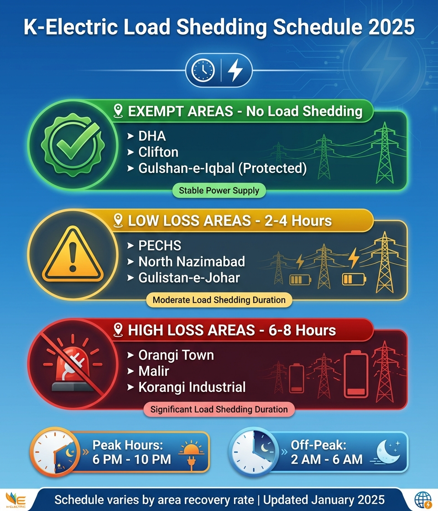

Frustrated with unexpected power cuts? Understanding the K-Electric load shedding schedule helps you plan your day better. This comprehensive guide covers area-wise timings, exempted zones, and real-time methods to check your neighborhood's power status in Karachi.
K-Electric implements load management based on NEPRA (National Electric Power Regulatory Authority) guidelines, categorizing areas by their recovery rates and technical losses. Let's understand how this affects your area.

⚡ Quick Load Shedding Status Check
✅ Exempt Areas
0 Hours
No Load Shedding
DHA, Clifton, Protected Feeders
⚠️ Low-Loss Areas
2-4 Hours
Moderate Outages
PECHS, North Nazimabad, Johar
🔴 High-Loss Areas
6-8 Hours
Extended Outages
Orangi, Malir, Korangi Industrial
📍 K-Electric Area-Wise Load Shedding Schedule
K-Electric divides Karachi into three categories based on recovery rates and infrastructure:
🟢 Category A: Zero Load Shedding (Exempt Areas)
Recovery Rate: 95-100% | Daily Outage: 0 Hours
Exempt Localities:
- DHA Phase 1-8
- Clifton (All Blocks)
- Bath Island
- PECHS Block 2, 6
- Gulshan-e-Iqbal (Protected Feeders)
- Gulistan-e-Johar (Selected)
- Tariq Road Commercial
- Saddar
- I.I. Chundrigar Road
- Port Qasim Industrial
- SITE Industrial (100% recovery)
- Korangi Industrial (Premium)
Why No Load Shedding? These areas maintain excellent bill payment records (95%+ recovery), have minimal technical losses, and contribute significantly to K-Electric's revenue.
⚠️ Category B: Moderate Load Shedding (Low-Loss Areas)
Recovery Rate: 70-94% | Daily Outage: 2-4 Hours
Affected Localities:
- North Nazimabad (Most Blocks)
- Federal B Area
- Gulistan-e-Johar (Most Blocks)
- Gulshan-e-Iqbal (Non-protected)
- PECHS (Other Blocks)
- Liaquatabad
- Nazimabad
- North Karachi
- New Karachi
- Surjani Town (Selected)
- Scheme 33
- Bahadurabad
Typical Schedule:
| Time Slot | Duration | Frequency |
|---|---|---|
| 2:00 AM - 4:00 AM | 2 Hours | Daily (Off-Peak) |
| 2:00 PM - 4:00 PM | 2 Hours | Alternate Days |
🔴 Category C: Extended Load Shedding (High-Loss Areas)
Recovery Rate: Below 70% | Daily Outage: 6-8 Hours
Affected Localities:
- Orangi Town
- Baldia Town
- Lyari
- Malir
- Landhi
- Korangi (Non-Industrial)
- Bin Qasim Town
- Gadap Town
- Surjani Town (High-Loss)
- Mauripur
- Keamari
- Ibrahim Hyderi
Typical Schedule:
| Time Slot | Duration | Frequency |
|---|---|---|
| 2:00 AM - 6:00 AM | 4 Hours | Daily |
| 12:00 PM - 2:00 PM | 2 Hours | Daily |
| 6:00 PM - 8:00 PM | 2 Hours | Daily (Peak Hours) |
⚠️ Important: High-loss areas face extended outages due to low bill recovery rates and high electricity theft. Improving area recovery can reduce load shedding duration.
📱 How to Check Your Area's Load Shedding Schedule
K-Electric provides multiple ways to check your area's current and upcoming load shedding timings:
Method 1: KE Website
- Visit www.ke.com.pk
- Click on "Power Status" or "Outage Updates"
- Enter your area name or feeder code
- View real-time schedule and updates
Method 2: KE Live Mobile App
Download the KE Live app (Android/iOS) for:
- Real-time power status notifications
- Scheduled vs unscheduled outage alerts
- Area-specific load shedding calendar
- Report power outage directly from app
Method 3: SMS Service
SMS Format: Type your Area Name and send to 8119
Example: SMS "NORTH NAZIMABAD" to 8119
You'll receive current load shedding schedule for your area within minutes (standard SMS rates apply).
Method 4: Helpline 118
Call K-Electric helpline 118 and:
- Press 1 for Urdu / 2 for English
- Press option for "Power Status"
- Provide your area name or account number
- Get immediate schedule information
Method 5: Social Media
Follow K-Electric official accounts for updates:
- Twitter/X: @KElectricPk - Real-time outage updates
- Facebook: K-Electric Official - Scheduled maintenance alerts
- WhatsApp: 0348-0000118 - Send area query
⚙️ Factors Affecting Your Area's Load Shedding Duration
Understanding why some areas face more load shedding helps you take action to improve your neighborhood's status:
1. Area Recovery Rate (Bill Payment Ratio)
The primary factor determining load shedding duration:
- 95-100% Recovery: Zero load shedding (Exempt)
- 70-94% Recovery: 2-4 hours daily
- Below 70% Recovery: 6-8 hours daily
Recovery rate = Percentage of bills paid vs bills issued in your feeder area
2. Technical Losses (Electricity Theft & Kunda)
Areas with high kunda culture and electricity theft face longer outages:
- Illegal connections (kundas) create overload
- High technical losses burden paying consumers
- NEPRA mandates extended load shedding for high-theft areas
3. Infrastructure Quality
- Old transformers and cables require frequent maintenance
- Overload protection triggers automatic shutdowns
- Grid station capacity vs area demand mismatch
4. Seasonal Demand
| Season | Peak Demand | Load Shedding Impact |
|---|---|---|
| Summer (May-Sept) | 3,200-3,500 MW | Maximum (AC usage) |
| Winter (Nov-Feb) | 2,200-2,500 MW | Reduced (minimal AC) |
| Monsoon (July-Aug) | Variable | Unscheduled (rain damage) |
🔄 Scheduled vs Unscheduled Load Shedding
It's important to distinguish between planned and unexpected outages:
⏰ Scheduled Load Shedding
- Predictable: Fixed daily timings
- NEPRA Approved: Based on area category
- Load Management: Balances demand-supply
- Notification: Announced in advance
Purpose: Prevent grid overload during peak hours
⚡ Unscheduled Outages
- Unpredictable: No fixed timing
- Technical Issues: Faults, tripping, overload
- Weather Related: Rain, storms, flooding
- Emergency: Grid station failure
Response: KE teams work to restore ASAP (1-4 hours typically)
💡 How to Identify:
Scheduled: If outage occurs during your area's regular timing = Planned
Unscheduled: If power goes off outside regular schedule = Technical fault
For unscheduled outages, call 118 to report and get estimated restoration time.
✅ How to Reduce Load Shedding in Your Area
Communities can work together to improve their area's status and reduce power cuts:
Community Actions
- Pay Bills on Time: Higher recovery rate = Less load shedding. Encourage neighbors to pay regularly.
- Report Electricity Theft: Call 118 or use KE app to report illegal connections (kundas) anonymously.
- Form RWA Committee: Resident Welfare Associations can liaise with KE for infrastructure upgrades.
- Support Anti-Theft Drives: Cooperate with KE inspection teams during anti-kunda operations.
- Request Infrastructure Upgrade: Submit formal requests for transformer/cable replacement if needed.
- Monitor Consumption: Reduce overall area load during peak hours to prevent overload tripping.
📈 Success Stories
Several Karachi neighborhoods have upgraded from high-loss to low-loss category through coordinated efforts:
- North Nazimabad Block L: Reduced load shedding from 6 hours to 2 hours by achieving 85% recovery
- Gulistan-e-Johar Block 16: Became exempt after community anti-theft campaign
- FB Area Block 8: Improved from 8 hours to 4 hours through consistent bill payments
🔧 K-Electric Maintenance Shutdowns
Apart from load shedding, KE conducts planned maintenance shutdowns for infrastructure upgrades:
Scheduled Maintenance vs Load Shedding
| Aspect | Maintenance Shutdown | Load Shedding |
|---|---|---|
| Notice | 3-7 days advance notification | Regular schedule |
| Duration | 4-12 hours (one-time) | 2-8 hours (daily) |
| Timing | Usually early morning | Peak hours |
| Areas Affected | All (incl. exempt) | Category-based |
| Purpose | Infrastructure upgrade | Load management |
How to Know: KE publishes maintenance schedules on their website, app, and sends SMS notifications to affected consumers 3-7 days before.
🔗 Related K-Electric Resources
❓ Frequently Asked Questions
What is the K-Electric load shedding schedule today?
Today's schedule varies by area. Check real-time status via: 1) KE Live app, 2) SMS your area to 8119, or 3) Call 118 helpline. Exempt areas have zero load shedding, low-loss areas 2-4 hours, high-loss areas 6-8 hours.
Which Karachi areas are completely exempt from load shedding?
DHA all phases, Clifton, Bath Island, selected PECHS blocks, protected feeders in Gulshan-e-Iqbal and Gulistan-e-Johar, Tariq Road commercial, and industrial areas with 100% bill recovery are exempt from scheduled load shedding.
Why is there more load shedding in my area?
Extended load shedding is due to: 1) Low bill payment rate (below 70% recovery), 2) High electricity theft (kundas), 3) Technical losses, and 4) NEPRA categorization. Improving community bill payment can reduce duration.
How can I check my feeder's load shedding timing?
Find your feeder timing by: 1) Downloading KE Live app and entering your area, 2) Visiting ke.com.pk power status page, 3) SMS area name to 8119, or 4) Calling 118 and asking for your feeder schedule.
What is the difference between scheduled and unscheduled load shedding?
Scheduled load shedding follows fixed daily timings per area category. Unscheduled outages are unexpected due to technical faults, weather, or grid failures. Scheduled is for load management; unscheduled requires repair work.
Can my area become exempt from load shedding?
Yes! Areas can upgrade by achieving 95%+ bill recovery rate and eliminating electricity theft. Several neighborhoods have successfully reduced load shedding through community efforts and consistent bill payments.
📌 Final Thoughts
Understanding the K-Electric load shedding schedule helps you plan your daily activities better. Remember that your area's category is not permanent - communities can work together to improve recovery rates and reduce power cuts.
The key factors are: timely bill payments, reporting electricity theft, and cooperating with KE infrastructure improvements. Many Karachi neighborhoods have successfully reduced their load shedding from 8 hours to 2 hours or even achieved exempt status.
For real-time updates, always use the KE Live app or check the official website. For other KE services, visit our duplicate bill page or check current electricity rates.